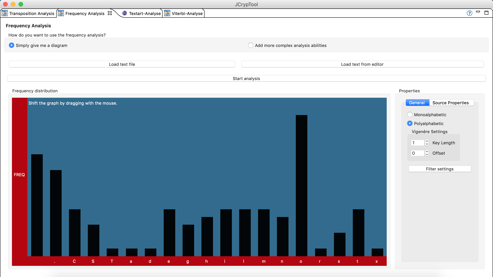
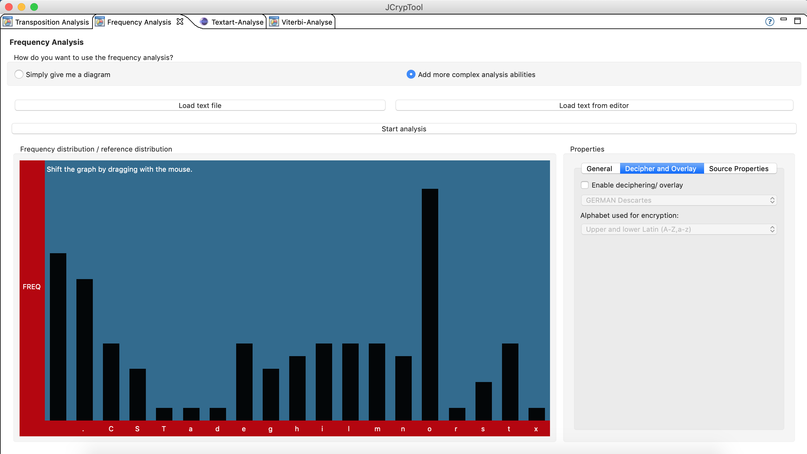

The Frequency Analysis basically counts the occurrence of all characters the text consists of. You can use this plug-in in two ways, depending on what you want to do with the frequency distribution:
The simple view shows you a graph with the percental occurrences. You have the option to alter the text before analyzing it (filter characters, transforming all characters to lower case, etc.).
The extended view offers more analysis abilities, which are located in the second tab in the properties area:

The first option offered is to "overlay" a reference distribution. This will be semi-transparent, and can be useful in many ways, but exceptionally when using it with the "decryption tools" below. You can choose a reference text from which the distribution is calculated in the drop down menu below.
The next option is on which character set (alphabet) the reference distribution is displayed. If you only want to see what is the usual distribution of capital letters over a text as overlay, select the corresponding alphabet "Upper Latin".
Important: this option is adjusting itself correctly on ciphertexts normally. If you use an overlay alphabet whose cardinality is bigger than the cardinality of the ciphertext's alphabet, the deciphering tools (below) won't work correctly.
Deciphering tools: Enable the overlay, set the correct key length ("General" tab), and try to match the reference overlay with your actual graph (black bars) by dragging it with the mouse. When you are done matching the graph, you have found the key character for this certain position in the key string. Click on the "Save, next position!" button to continue deciphering the text. Position by position the key is revealed in the lower corner of the deciphering tools. You can click on this field, too, to set the key manually.

Like the Friedman test, the frequency analysis integrates with the Vigenère helper. Click "Save result" to save the found key in the Vigenère helper.